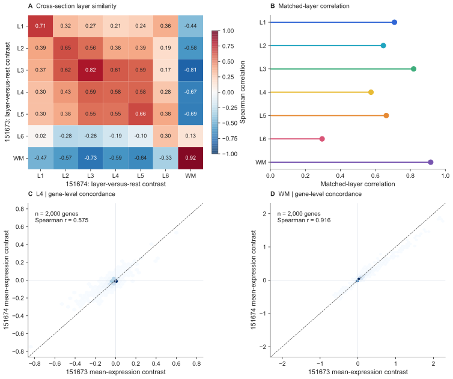

PYTHON × SPATIAL TRANSCRIPTOMICS
人脑皮层
空间转录组分析
基于公开 DLPFC Visium 数据，比较两张相邻切片的层相关表达、空间结构与预测表现。
01 / INTERACTIVE ATLAS
组织图与空间表达
选择切片和图层，调整叠加透明度。将鼠标移到捕获点或触摸画布，查看该点的实际数值。
02 / MODEL EVALUATION
跨切片预测与误差
训练只使用 151673 的表达数据，评估使用预先留出的 151674。两张切片来自同一供体。
跨切片宏平均 F1
白质 F1 为 0.896，而 L4 为 0.196。整体指标之下，相邻皮层的区分仍然困难。
边界点定义为直接邻居中至少有一个异层点；该标签仅用于误差分析。
| 模型 | 准确率 | 宏 F1 | 宏 AUROC | 宏 AP |
|---|
空间块 bootstrap：逻辑回归宏 F1 的 95% 区间为 [0.491, 0.559]。此区间只描述当前切片的条件不确定性。
下载全部模型指标 CSV ↓
CROSS-SECTION ANALYSIS
表达一致性与图像消融
比较层表达模式、空间梯度、邻域关系，以及图像特征的预测增益。
白质模式一致，皮层仍有差异
2,000 个基因的层对比中，七类有六类与另一切片的同名层最相关。白质相关系数为 0.916，L6 为 0.296。
开发片筛选的 21 个候选在留出片均保持正方向。这是同供体相邻切片的方向复核，不能替代独立供体验证。
下载跨切片一致性 CSV ↓
加入图像，并未改善本次预测
从组织图提取八个简单颜色与纹理特征，保持同一训练与留出划分。联合模型相对表达模型的宏 F1 差为 −0.017，配对空间块区间为 [−0.057, 0.028]。
这说明当前特征拼接没有带来明确增益，不代表所有组织图像方法都无效。
| 输入 | 准确率 | 宏 F1 | 宏 AUROC |
|---|
03 / FIGURES
分析图版
25 组分析图，包括分析流程、切片对照、统计结果与模型诊断。点击查看清晰大图。
04 / CODE AND DATA
分析流程与代码
计数、位置、图像、标签逐点核对。特征选择、标准化和 PCA 只在训练集拟合，固定随机种子，保留数据校验值和运行记录。
- 01读取与配准
HDF5 + 条码 + H&E + 空间坐标
- 02质量与表达
质控 → 归一化 → 2,000 个特征 → 50 个主成分
- 03统计与预测
层差异、Moran I、聚类与三种验证设计
- 04解释与边界
混淆矩阵、ROC / PR、校准与空间误差
05 / SOURCES & ACKNOWLEDGEMENTS
数据来源与参考文献
主数据：Maynard et al., Nature Neuroscience (2021) · DOI ↗ · 原作者数据仓库 ↗
查看 35 篇已核对文献
致谢
感谢课程老师每周前三节课的系统讲授，也感谢助教老师在最后一节实践课中的实用指导。感谢老师与助教们的耐心讲解和指导。